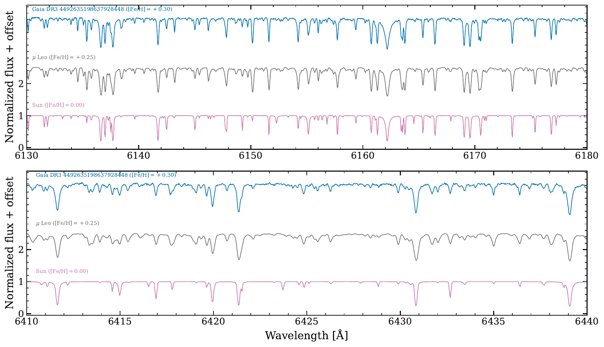

Most stars near the Sun have roughly solar composition, because the local gas they formed from does. So when you find a star in the solar neighborhood with an iron abundance far above solar, \([\mathrm{Fe/H}] > +0.2\) or even \(+0.5\), something is off: that star almost certainly did not form here. It formed in the metal-rich inner Galaxy, the inner disk or bulge, and then migrated out to us through radial migration driven by the bar and spiral arms.
That makes these super metal-rich (SMR) stars unusually informative messengers. Their chemistry records the enrichment history of the inner Galaxy, which is otherwise hidden behind dust, and their orbits and ages bear on when the Milky Way's bar formed and how efficiently stars churn across the disk. They also probe the very high-metallicity end of chemical evolution models, where the models are barely constrained at all.
The catch is that nobody has studied them well. The large surveys that find SMR candidates measure only coarse metallicities, and the few detailed high-resolution abundance studies used small, heterogeneous samples picked from old catalogs. With Gaia we can finally do better: pick the most metal-rich nearby stars cleanly, then chase them down at high resolution.

PANTERA is the program we built to do exactly that. We select ultra metal-rich candidates, \([\mathrm{M/H}] > +0.4\) and within 500 pc, from the Andrae et al. (2023) Gaia XP catalog, and observe them with two complementary high-resolution spectrographs: APF at Lick (\(R \sim 110{,}000\)) for a broad confirmation sample, and LBT/PEPSI (\(R \sim 120{,}000\), \(\mathrm{S/N} > 100\)) for full multi-element analysis. I lead the LBT/PEPSI program, targeting the most metal-rich giants, as part of a team at Ohio State.
The analysis uses spectral synthesis and equivalent-width measurements with Korg, done differentially against the Sun, which is essential at high metallicity where heavy line blanketing makes continuum placement treacherous. From the PEPSI spectra we can measure more than 20 elements, from the light and \(\alpha\) elements through the iron peak to neutron-capture species, and combine them with Gaia kinematics. With these we can ask what the true metallicities are once measured at high resolution (Gaia XP underestimates them by \(0.1\) to \(0.25\) dex), whether the detailed abundance patterns and any chemically distinct subgroups point back to the inner Galaxy, what ages chemical clocks like \([\mathrm{Y/Mg}]\) imply, and ultimately how metal-rich a nearby star can be.
PANTERA forms a component of my dissertation. The first paper, Saad et al. (2026), presents high-resolution abundances of the most metal-rich systems; a second paper on the full sample, the selection strategy, and the comparison to Galactic chemical evolution models is in preparation. I'll share results here as they come.